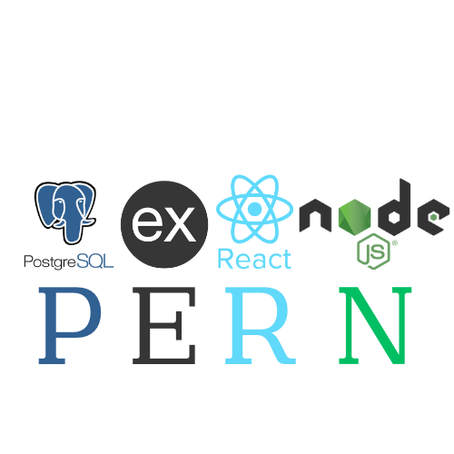
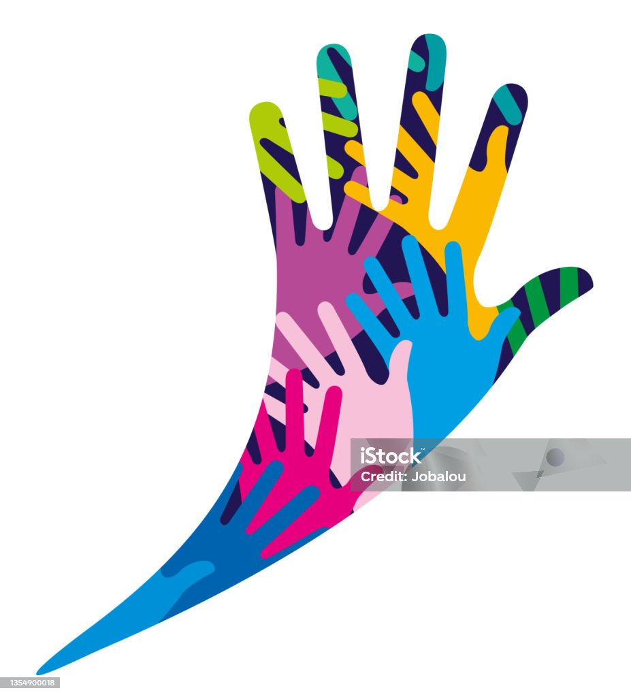

Hi I'm rajithlingam
PERN-STACK WEB DEVELOPER
About Me
Hey there! I'm rajithlingam, a budding PERN-stack web developer with a passion for crafting engaging digital experiences. I thrive on challenges and love diving into the world of code to bring ideas to life. Let's collaborate and create something amazing together!

Skills
PERN-stack Development:
Proficient in PostgreSQL, Express.js, React.js, and Node.js.
JavaScript (ES6+):
Strong command of modern JavaScript features, asynchronous programming, and functional concepts.
Frontend Development:
Skilled in building responsive and interactive user interfaces using HTML5, CSS3, and frameworks like Bootstrap or Material-UI.
Backend Development:
Experienced in designing and implementing RESTful APIs, handling authentication, and managing server-side logic with Express.js and Node.js.
Database Management:
Knowledgeable in SQL and PostgreSQL databases, including schema design, CRUD operations, indexing, and querying.
React.js:
Proficient in building dynamic, single-page applications (SPAs) with React.js, including state management, component lifecycle methods, and routing.
Node.js:
Skilled in building scalable server-side applications with Node.js, including asynchronous I/O, event-driven architecture, and package management with npm or yarn.
Version Control:
Familiar with Git and platforms like GitHub or GitLab, including branching, merging, and collaboration.
Problem-Solving:
Strong analytical and creative problem-solving skills, able to break down complex problems and find effective solutions.

Communication and Collaboration:
Excellent communication skills, both verbal and written, with the ability to work collaboratively in a team environment and convey technical concepts to non-technical stakeholders.
Continuous Learning:
Enthusiastic about staying updated with the latest trends, tools, and best practices in MERN-stack development through self-directed learning and participation in developer communities.
Project Management:
Familiarity with project management tools like Jira or Trello, as well as Agile methodologies like Scrum or Kanban.